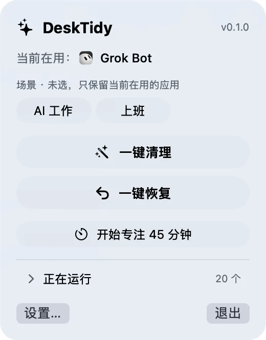
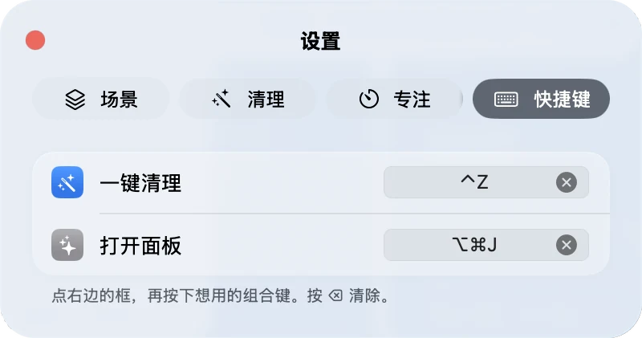
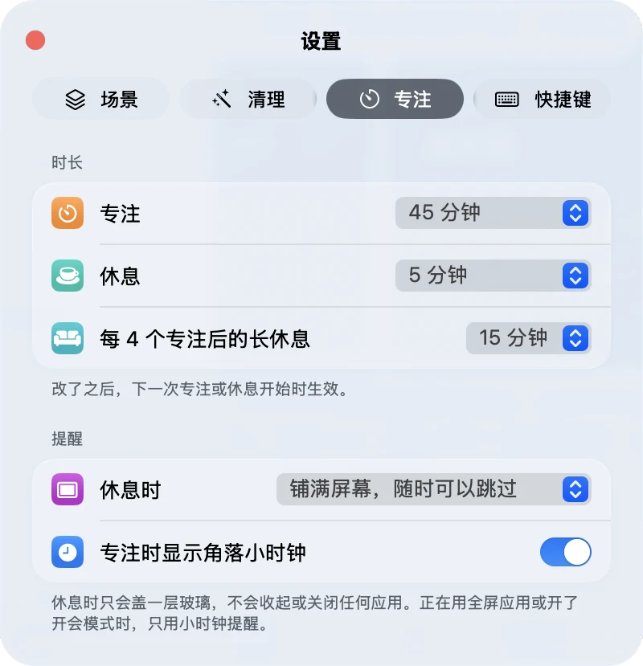
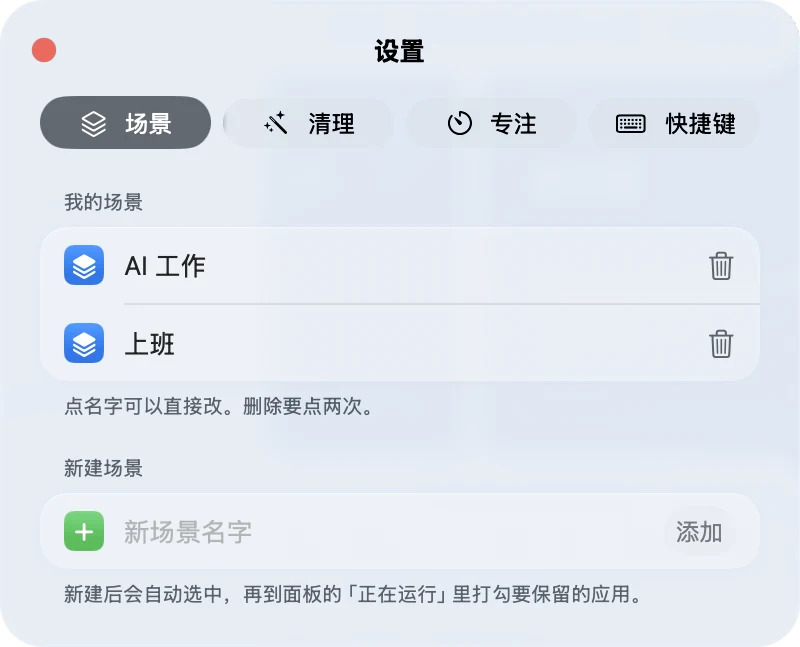
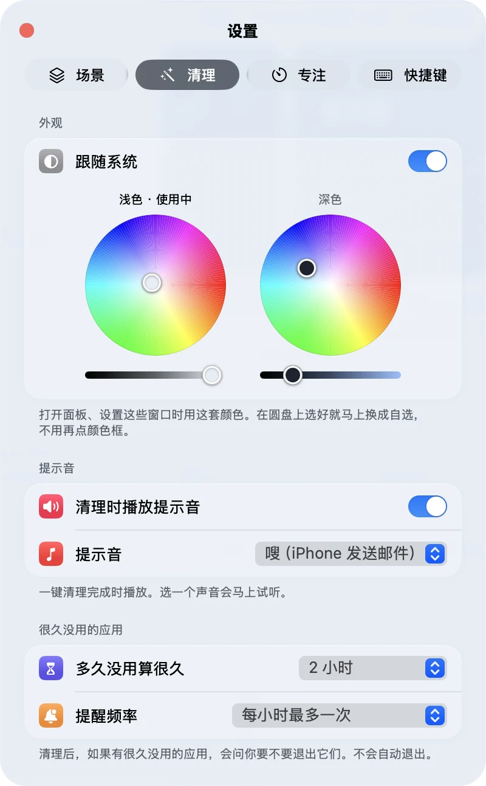

01
项目背景
- 干活时同时开着 ChatGPT、Claude、浏览器和飞书。窗口越堆越多，一切换就开始掉帧。
- 自己是产品经理、设计师这一类人，不靠写代码工作，但每天就被这件事卡住。
- 常见清理工具要么直接关掉应用，要么甩出内存和进程。这两样都不是想要的结果。
- 要一个住在菜单栏里的小工具：装上就能用，只把眼前不用的应用收起来，不关掉它们。第一版先自己天天用。
P03 / PROJECT · 独立产品 · DeskTidy
产品定义 · 交互把关 · 规则约束 · 与 AI 结对做出原生 Mac 应用
01
02
定原则→拆成小任务→AI 实现→自己的 Mac 上验收→不对就退回→下一件
03
04
05




